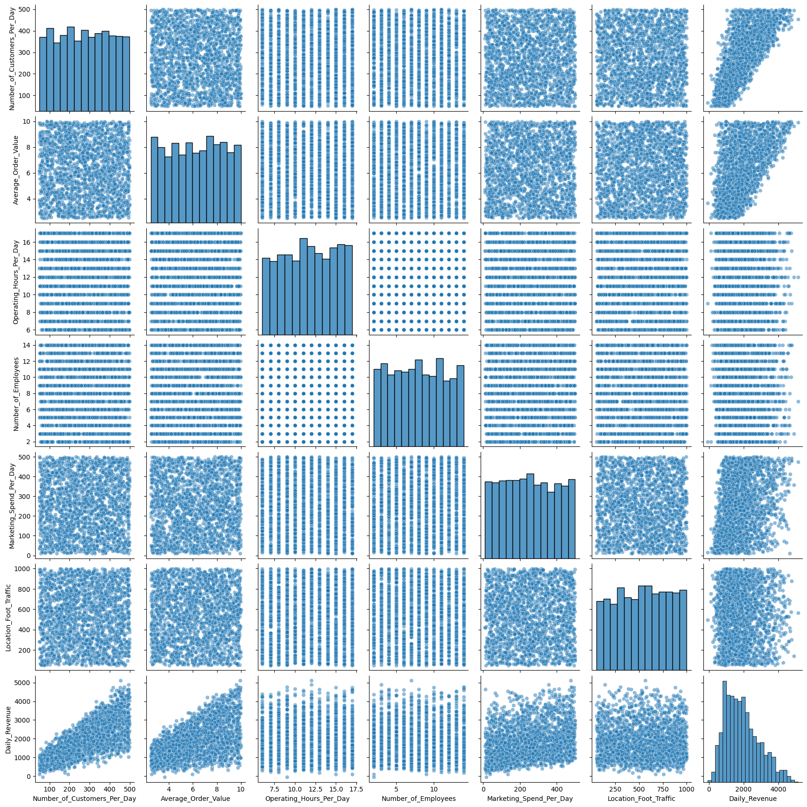
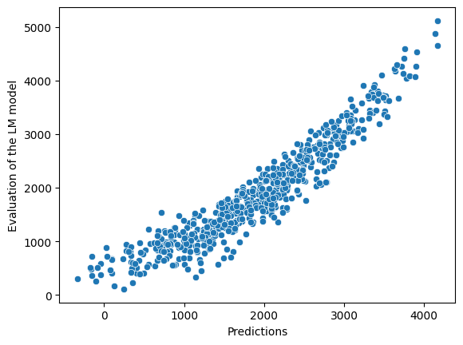
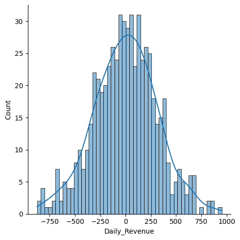
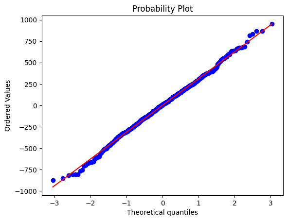
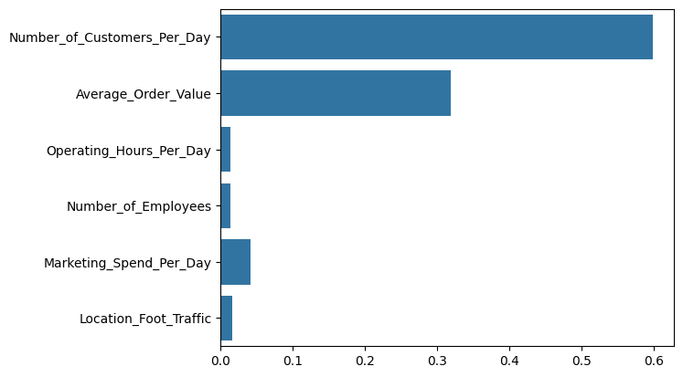
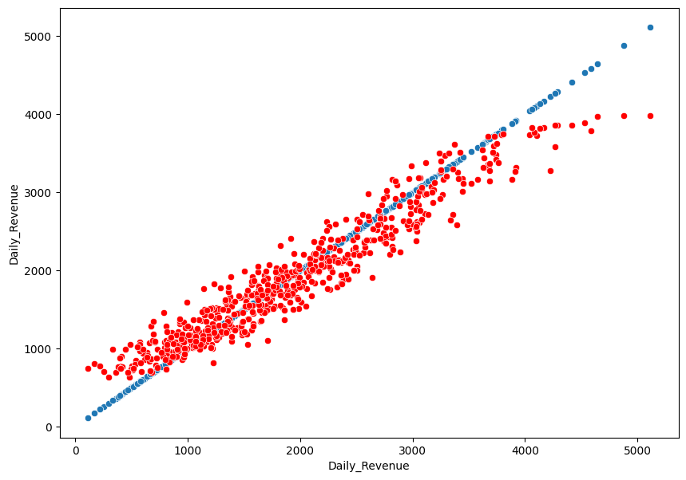

Predicting a coffee shop's daily performance can help owners fine-tune their strategies for better profitability. According to the National Coffee Association (NCA), "The number of American adults who have had coffee in the past day has increased by 37% since 2004, putting past-day coffee consumption at its highest level in more than 20 years." With people drinking coffee more than ever before, it's important for coffee shops to understand what factors drive sales.
Using the Coffee Shop Daily Revenue Prediction Dataset , this project aims to answer:
This project aims to uncover meaningful patterns in daily coffee shop revenue and dive into how factors like marketing spend, foot traffic, and staffing impact sales performance through regression analysis.
The dataset contains 2,000 rows, each representing a day of operation for a coffee shop, and 7 features. These features are important variables that influence daily revenue. The features include:
| Feature | Notes |
|---|---|
| Number of Customers Per Day | Total number of customers visiting the coffee shop on any given day. |
| Average Order Value ($) | The average dollar amount spent by each customer during their visit. |
| Operating Hours Per Day | The total number of hours the coffee shop is open for business each day. |
| Number of Employees | The number of employees working on a given day. This can influence service speed, customer satisfaction, and ultimately, sales. |
| Marketing Spend Per Day ($) | The amount of money spent on marketing campaigns or promotions on any given day. |
| Location Foot Traffic (people/hour) | The number of people passing by the coffee shop per hour, a variable indicative of the shop's location and its potential to attract customers. |
| Daily Revenue ($) | The total revenue generated by the coffee shop each day. It is calculated as a combination of customer visits, average spending, and other operational factors like marketing spend and staff availability. |
Regression in machine learning refers to a supervised learning technique where the goal is to predict a continuous numerical value based on one or more independent features. It finds relationships between variables so that predictions can be made. There are many types of regression such as simple linear regression, multiple linear regression, and support vector regression.
In this project, I used Linear Regression, Lasso Regression, and Random Forest Regression to model the coffee shop’s performance.
Linear Regression is the most straightforward. It tries to fit a straight line through the data using the equation:
$$y = \beta_0 + \beta_1 x_1 + \beta_2 x_2 + \cdots + \beta_n x_n + \varepsilon$$
where:
y is the predicted output,
x₁...xₙ are the input features,
β values are the learned weights (coefficients),
ε is the error term.
Random Forest Regression is a non-linear, ensemble learning method. It builds multiple decision trees and averages their predictions to improve accuracy and reduce overfitting. Unlike linear models, it can capture complex relationships between variables and handle a mix of data types more effectively.
Lasso Regression is similar to linear regression but includes regularization. It tries to reduce overfitting by penalizing the absolute size of the coefficients. The loss function looks like:
$$Loss = MSE + \lambda \sum_{j=1}^{n} |\beta_j|$$
This encourages sparsity, which means some coefficients can be driven to zero, effectively performing feature selection.
To begin the analysis, I first explored the dataset for any patterns, correlations, and distributions. I made a pairplot to visualize the relationships between all of the features. From this I noticed that Number_of_Customers_Per_Day and Average_Order_Value had a strong corelation with Daily_Revenue. Marketing_Spend_Per_Day and Location_Foot_Traffic had only a faint amount of correlation with Daily_Revenue. Then for Operating_Hours_Per_Day and Number_of_Employees theres no corelation with Daily_Revenue.
Before applying the model, I first checked the dataset for missing values and duplicates. This is an important step because any missing data or duplicate records could skew the results of the regression model. I used basic data exploration methods like isnull() to identify missing values and duplicated() to check for any duplicate rows. Since the dataset did not contain any missing values or duplicates, I began modeling without needing to clean the data further.
For the first experiment, I built a linear regression model to predict the coffee shop's performance based on the available features. The model was implemented using the LinearRegression class from the scikit-learn library in Python. I split the dataset into training and testing sets, training the model on the training data, and using it to predict on the testing data.
To evaluate the performance of the linear regression model, I used several key metrics:
These results indicate that the model fits the data well. With an R² score of 0.89, the model explains 89% of the variance in the coffee shop’s performance, demonstrating strong predictive capability and a good overall fit.
  For the second experiment, I implemented a Random Forest Regressor model to improve predictive performance by capturing more complex relationships in the data. This model was implemented using the RandomForestRegressor class from the scikit-learn library with n_estimators set to 500 and oob_score enabled to validate accuracy internally.
To evaluate the performance of the Random Forest model, I used the following metrics:
These results show a clear improvement over the linear regression model. The Mean Absolute Error (MAE) dropped from 245.85 to 224.96, and the Mean Squared Error (MSE) decreased from 97,065.55 to 80,572.78. Additionally, the Out-of-Bag (OOB) score was 0.91, indicating better generalization. These improvements suggest the Random Forest model captures more complex relationships and delivers stronger performance overall.
 For the third experiment, I tried Lasso Regression to see if introducing regularization could help reduce potential overfitting and identify key features. I used the Lasso class from scikit-learn and kept the same training and testing strategy.
The performance metrics for the Lasso model were:
The Lasso model performed slightly better than the original linear regression in terms of MAE and MSE. However, its R² score remained at 0.89. Lasso helped simplify the model by reducing the impact of less important features, but it still couldn’t effectively model nonlinear patterns as well as the Random Forest.
This project has the potential to make a big impact on how coffee shop businesses make data-driven decisions. By accurately predicting performance based on factors like the number of customer per day, average sales, and marketing costs, shop owners can better understand what drives revenue and optimize their operations. That might mean adjusting store hours, staffing, or even product offerings based on what the model finds most important.
However, there are some ethical concerns. If this model was used without transparency or context, there’s a risk of making decisions that ignore human factors like cutting employees based on predicted sales, without considering the employees well-being. Also, if the data used contains hidden biases, it could reinforce unfair business practices. So, it’s important to make sure the data is interpreted responsibly.
From this project, I learned a lot about how different models handle the same data in totally different ways. Linear regression gave me a solid baseline, but once I switched to Random Forest, I noticed better accuracy, which showed me how much more powerful ensemble methods can be for capturing complex patterns.
I also saw how Lasso helped simplify the model and cut down on noise by focusing on the most important features, even though it didn’t perform quite as well as Random Forest. Overall, this project helped me see the importance of not just building models, but really evaluating them and making smarter choices based on what the data’s telling me.